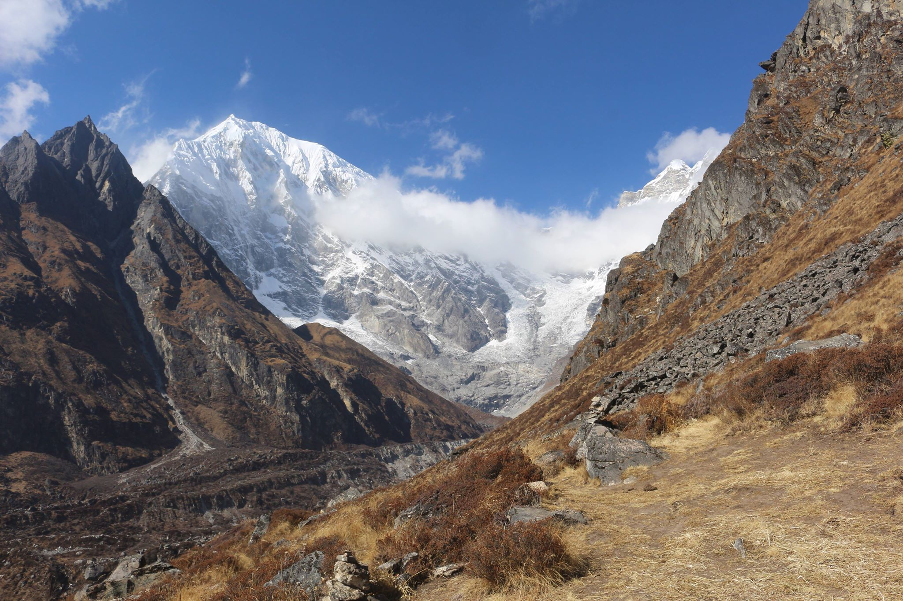
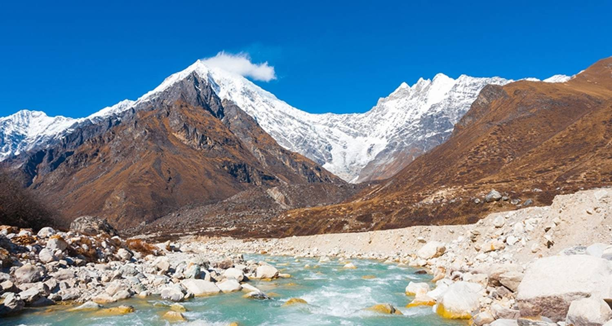
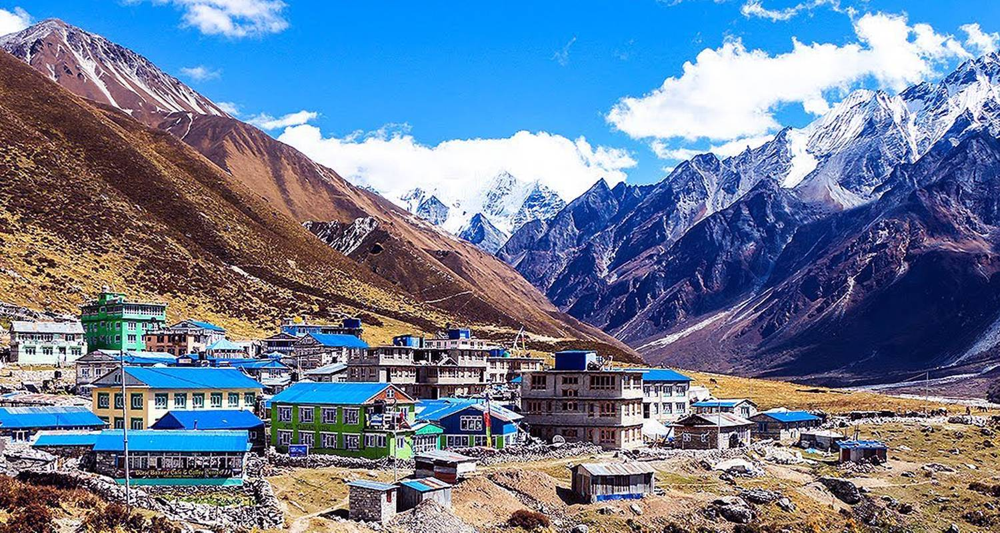
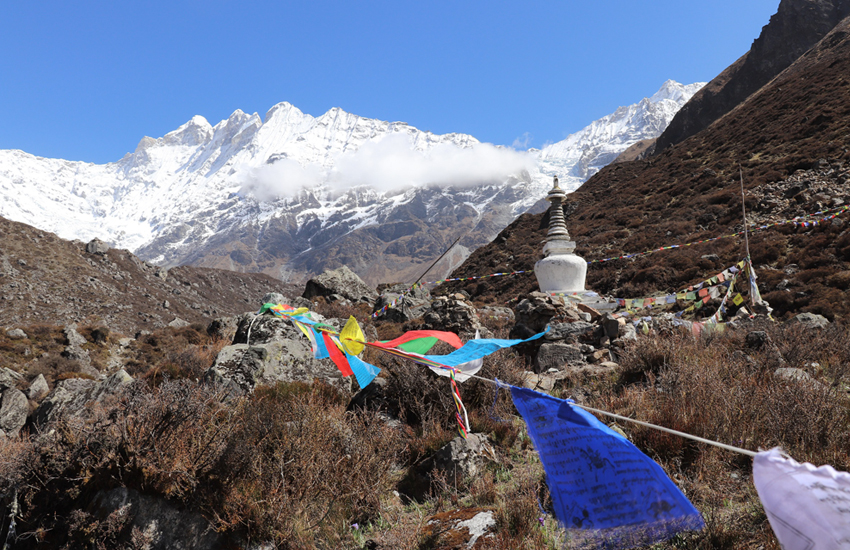
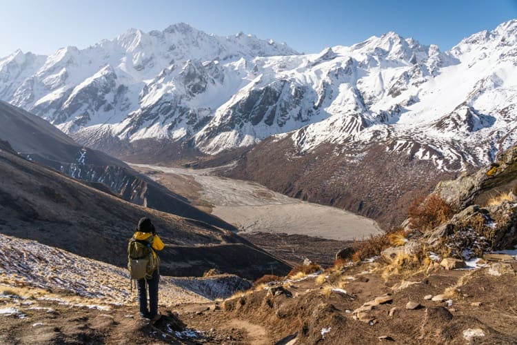
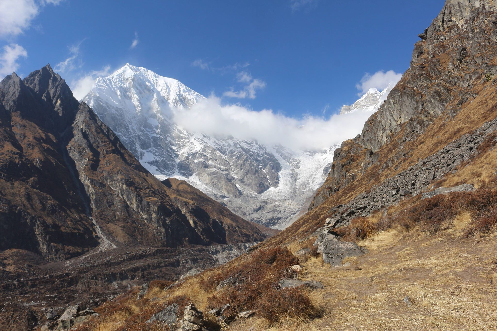
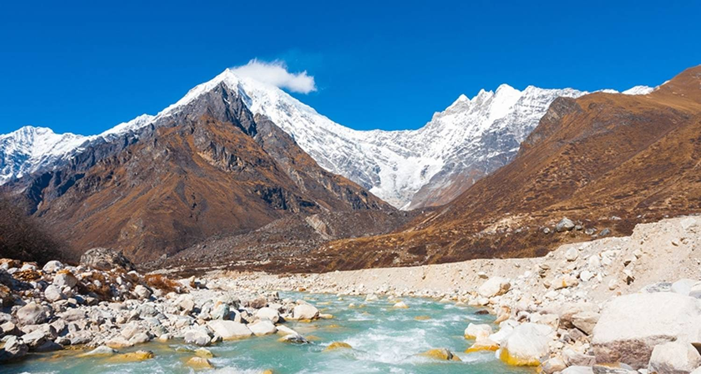
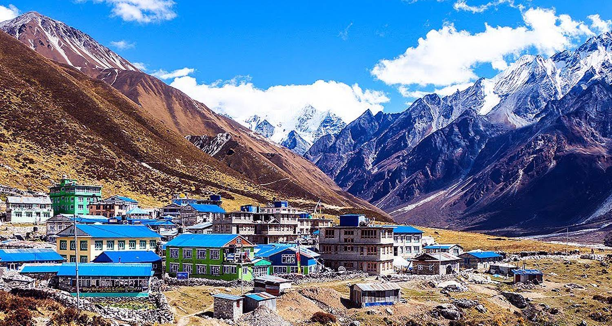
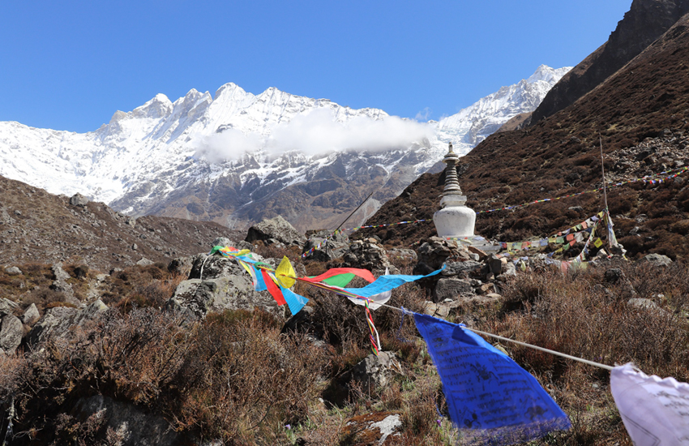
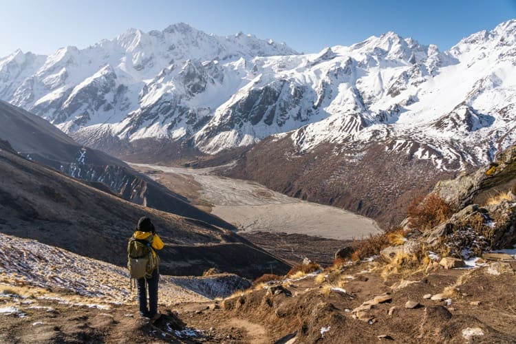

Hiking | Langtang Trek
 









OVERVIEW
On this classic Lantang Valley Trek, you will be enticed by the trekking destinations of Nepal. Just 30 kilometers away from the capital, Langtang is an enriching spot for nature and hike lovers. More than 70 glaciers decorate the majestic peaks of Langtang. The 10-day trek commences from Syabrubesi, a rural valley village, and takes you to the beautiful Kyanjin Gompa above 4000 meters. Langtang, a trip that will make you swoon with its breathtaking beauty, is a traffic-free trekking region that places itself third in Nepal's most well-known trekked areas. The area offers a broad range of mountains for its spectators and is a relatively more leisurely trek. However, it is not congested as the other two popular regions like Annapurna and Everest.
The region is a pleasant experience for those who like to enjoy walking to the homes of the Red Panda, Himalayan Tahr, Danphe, Himalayan Monals, snow leopard, and many more. The region is a wonderland for animal lovers and bird watchers as the vast jungle terrains and open pasturelands present the stunning features of the Langtang Valley Trek. Overall, traveling to this region will surely enjoy their time by indulging in the Himalayas and jungles’ serene beauty. And at the same time, experience the magnificent cultures and traditions of the Tamang and Sherpa communities. Hence, embark on the Langtang valley trek to glimpse typical Nepalese life and wilderness of sky-scraping mountains and crystalline lakes.
Langtang Valley Trek Difficulty This is a trip for those who enjoy a moderate hike. The courses ascend gradually and help the trekkers adjust to the altitude quickly. Furthermore, our expert guides and leaders will always be there to accompany you and ensure you feel supported as you hike. The ten-day expedition will take you to the highest point of our trek in Chorkari Ri at 5050 meters. Chorkari Ri is an excellent point to see the Lantang range and its endearing mountains real close. Despite the Langtang Valley being a moderate hike, we suggest you dedicate some time to personal fitness and exercise. You will easily find yourself walking for about 4-5 hours daily and on high elevations. So to ensure you have the best experience on this trek, we think getting pre-trained for at least a month before your actual trek is best!
The weather is one of the most important factors when planning for the Lantang Valley Trek. The best time to visit the area is in the spring and autumn season as it provides the most scenic views. During the monsoon season, the roads are wet and prone to landslides. However, if you are keen to witness the valley with the lush and misty environment with less crowd, you would not mind the monsoon season. Likewise, the views of the mountain are terrific during the winter season. The spring and autumn seasons are best for clear skies, greenery, shades of red and pink scattered in the flora all around. While the summer days are of scorching hot sun and cool breeze at nights, the mountain views are most spectacular during the winter season.